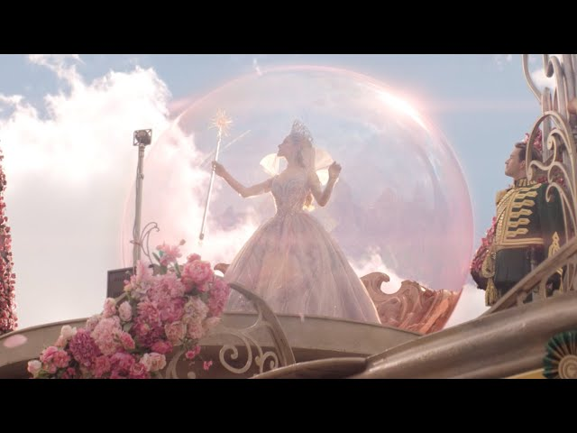

Glinda's main objects are the Bubble - a floating device that allows her to fly - and a Magic Wand that we later learn does not perform real magic. Both objects were a gift from the Wizard once Glinda establishes herself as an ally of his. Both objects serve as a way to counterpart Elphaba's more rough objects.